Loading 100% master scan…
A Data Essay in Seven Chapters
Vincent van Gogh painted nearly two canvases a week for almost a decade and sold one of them on the record; this essay asks how a production line can outrun its market by a century, and why the genius and the wreckage were the same machine.
The romantic version splits Van Gogh into two halves — the misunderstood saint at the easel and the unlucky madman off it — as though the paint were somehow rescued from the chaos. The paper trail says the opposite: he worked at industrial speed on his brother's payroll, produced between 860 and 900 paintings across fewer than nine painting years,1 and left a market that answered with exactly one documented lifetime sale.2
What followed his death in July 1890 was not a spontaneous awakening of taste; it was thirty years of inventory control, strategic exhibitions, and book publishing run by a 28-year-old widow from a boarding house in Bussum.3
Chapter 1 · The Machine
Before he picked up a pencil at twenty-seven, Vincent tried five respectable occupations and washed out of every single one — starting at Europe's premier art dealership, where his uncle got him in at sixteen, and ending in a Belgian coal district where the evangelisation committee declined to renew a six-month trial post.4
Hired at 16 via Uncle Cent; London 1873, Paris 1875. Out 1 Apr 1876 after an unauthorised Christmas trip & poor customer work (F30–F32).
Assistant teacher at Stokes's school in Ramsgate, then Rev. Jones in Isleworth (F33).
Blussé & Van Braam in Dordrecht; short stint before pivoting to divinity (F34).
Fourteen months in Amsterdam preparing for university entrance exams; abandoned July 1878 (F35).
Six-month trial post at Wasmes; committee did not renew for excess zeal and self-neglect (F36).
Decides to become an artist at 27 (F07): the one vocation that couldn't fire him.
Why periods, not years: per-calendar-year tallies are unsourced in institutional catalogues (F14). Period counts are documented across Nuenen (nearly 200 in 24 mo, F09), Paris (200+ in 23 mo, F10), Arles (184–200 in 15 mo, F11), Saint-Rémy (~150 in 12 mo, F12), and Auvers (~70 in ~70 days, F13). Early Dutch years (1881–83) omitted for lack of institutional split. Gold dot: The Red Vineyard, sold to Anna Boch for 400 F in 1890 (F70).
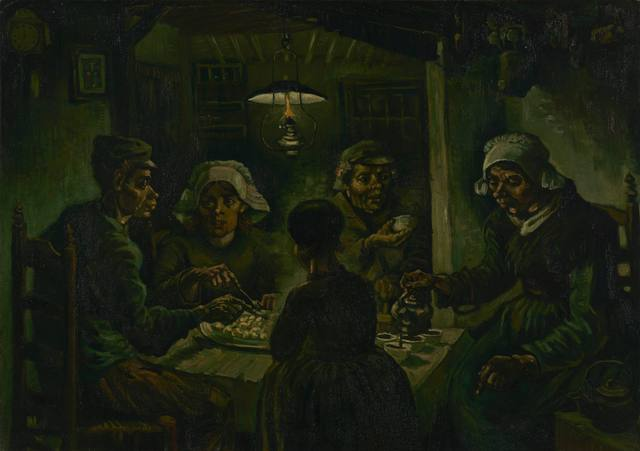
s0005V1962 (F0082 / JH0764). Painted during the ~200-canvas Nuenen stretch (~8.3/month); click any plate to open the full museum scan.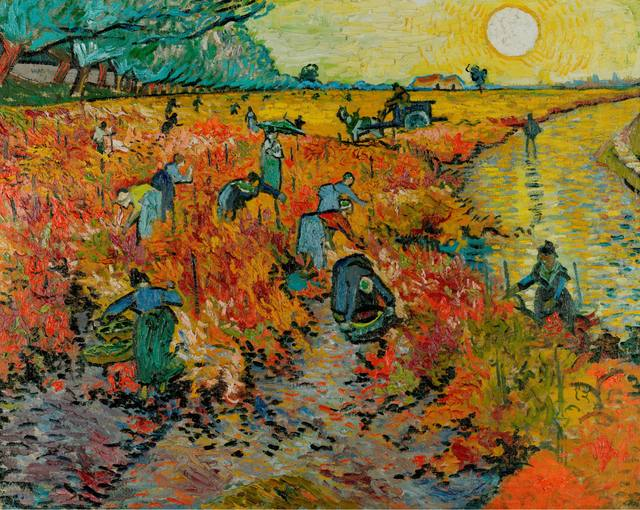
Ж-3372 (F495 / JH1626). Sold at Les XX in Brussels (1890) to Anna Boch for 400 F (F70).Chapter 2 · The Subsidy
The thick impasto everyone photographs in museums had an invisible co-author: Theo van Gogh's bank drafts. By Van Gogh Museum research, Theo earned 11,000–14,000 francs a year at Boussod, Valadon & Cie — the renamed firm that had let Vincent go in 1876 — and sent an average of 14.5% of his income straight to his brother.5
Model caveat (F25): Because Vincent lived in Theo's Paris flat (1886–88) without a cash stipend, our decade model totals ~16,000 F (range 13,000–19,000 F) — cross-checked against 14.5% of Theo's 11,000–14,000 F salary (F24).
Interlude · The Shopkeeper
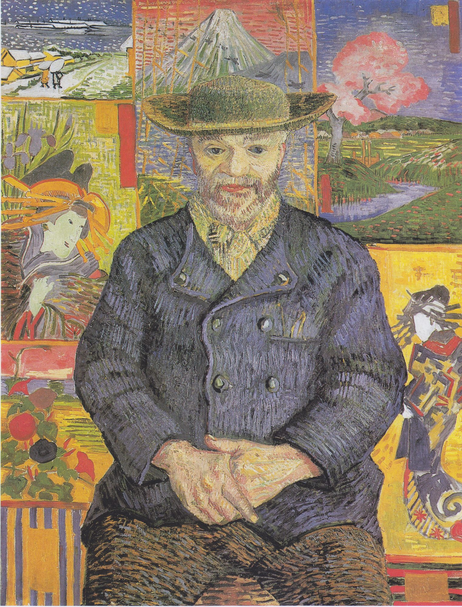
Julien Tanguy (14 rue Clauzel, Paris): arrested as a Communard in 1871, held on the prison hulks at Brest, freed 1873 (F93 — not deported to New Caledonia). After his death in Feb 1894, a Drouot charity sale for his widow raised about 10,000 F (F94).
Tanguy was the quiet engine of Paris's broke avant-garde: a colourman who accepted unsalable canvases in settlement for ultramarine and lead white. The Rodin portrait is a ledger entry in oil — the dealer seated serenely before the very Japanese prints he and Bing sold, paid for in portraits of the dealer.
Chapter 3 · The Beloveds
Track his attachments chronologically and a structural pattern emerges: every object of devotion after 1881 is progressively less able to refuse him — culminating in a "Japan" he invented from 660 woodblock prints and a brother bound by blood and payroll.6
London landlady Ursula Loyer's daughter; some scholars doubt any proposal occurred (F37).
His widowed cousin gave the clearest documented refusal in the archive: "never, no, never" (F38).
Theo opposed the match; she drowned on 22 Nov 1904 in Rotterdam's Provenierssingel canal (F39).
~660 prints bought in Paris (F41); Arles imagined as "the equivalent of Japan, the South" (F43).
A cooperative funded by Theo's 150 F/mo deal with Gauguin (F52).
651 surviving letters written to him alone; structurally unable to quit (F04, F24).
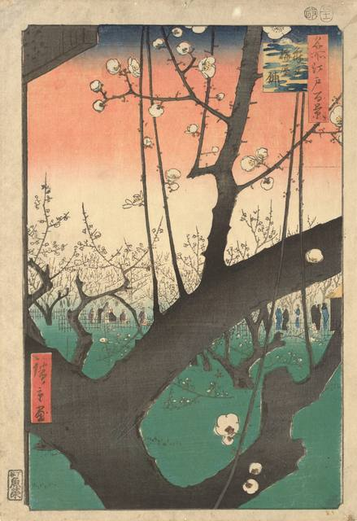
n0077V1962).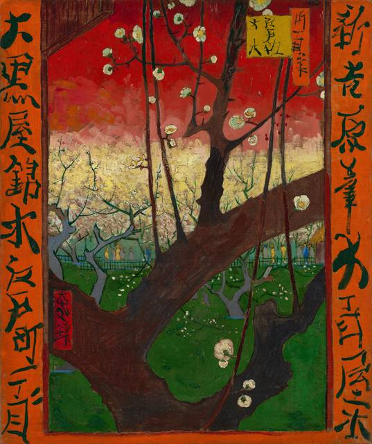
s0115V1962, F0371) — squared & bordered with copied characters (F42).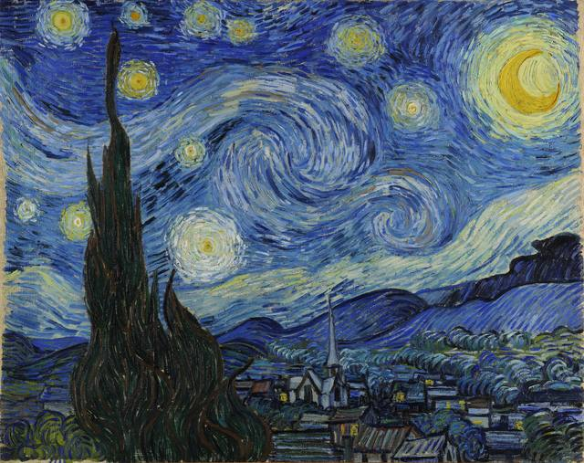
472.1941, F612 / JH1731) — the night sky painted from the asylum window.Chapter 4 · The Roommate
The courtship happened by mail before Gauguin even stepped off the train: on 1 October 1888 Gauguin sent Les Misérables (himself as Jean Valjean, with Émile Bernard behind him), and on 3 October Vincent answered with a portrait of himself as "a bonze, a simple worshipper of the eternal Buddha."7 By 11–12 December Gauguin wrote Theo to leave over "incompatibility" of characters; on 23 December Vincent severed all or nearly all of his left ear and handed it to Gabrielle Berlatier.8
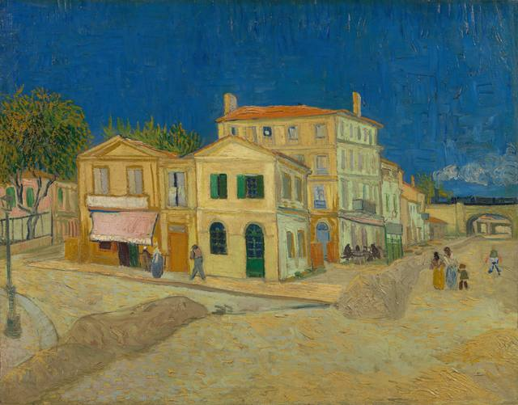
s0032V1962 (F0464 / JH1589). Place Lamartine, Arles: the planned headquarters.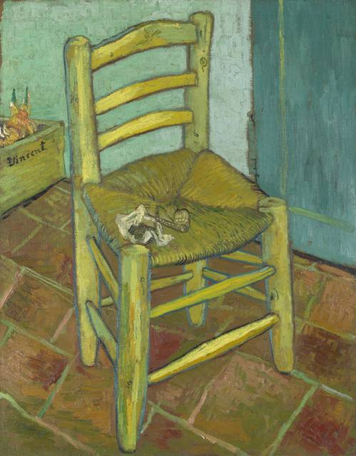
NG3862 (F498 / JH1635). Simple rush-bottomed chair in daylight.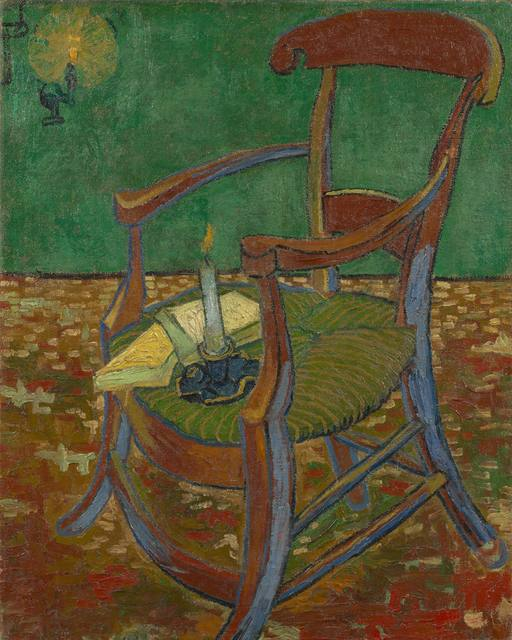
s0048V1962 (F0499 / JH1636). Gaslit walnut armchair with novels and candle.swatches.json)
Record check (F53–F56, F61–F63): Gauguin's razor-at-him story appears only fifteen years later in Avant et après (1903), not in his Jan 1889 letter; the Van Gogh Museum notes there are "only the words of Gauguin." The Studio of the South's sales were not zero — they were exactly one: The Red Vineyard, painted in Arles in Nov 1888 during Gauguin's stay (F62). Gauguin died in the Marquesas on 8 May 1903; in Tahiti he took Teha'amana at 13 and Pau'ura at 14 as "wives" (F63).
Chapter 5 · Test the Legend
Preserved in the Arles municipal archives (Feb–Mar 1889; Commons mistakenly dates it 1888): roughly 30 neighbours asking authorities to confine him or return him to his family. The one local institution that filed paperwork voted 30–0.
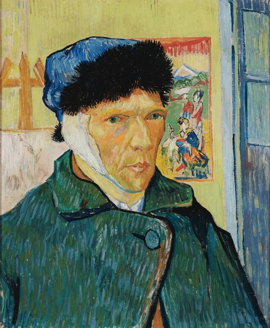
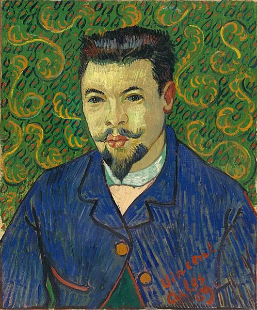
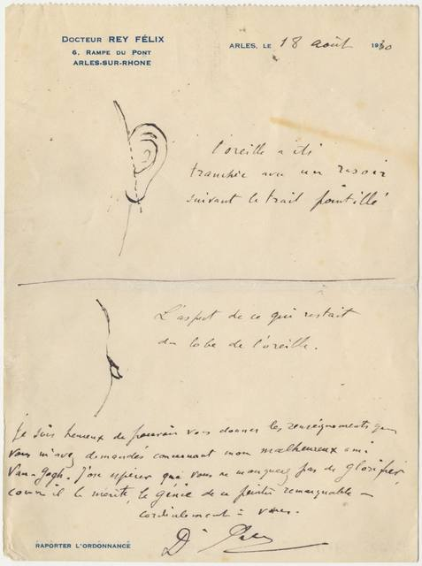
Left: Courtauld Self-Portrait with Bandaged Ear (Jan 1889, F527 — no pipe, distinct from F529 with pipe). Center & Right: Dr. Rey's portrait (Pushkin, entered 1948, not 1960; F91–F92) and his 18 Aug 1930 sketch for Irving Stone (Bancroft Library, found by Bernadette Murphy), flipping the ear verdict to CONFIRMED (F55).
Chapter 6 · The Fix
The market did not spontaneously discover Vincent van Gogh; it was administered. When Theo died in January 1891, his 28-year-old widow Johanna van Gogh-Bonger moved to Bussum with their almost-one-year-old son, ran a boarding house, and refused to liquidate the ~200-plus canvases.3
Instead she ran supply like a central bank: controlled sales (~190–250 works over her lifetime, F80), the 1901 Bernheim-Jeune Paris show (F84), the ~500-work Stedelijk retrospective she organised in 1905 (F78), over 100 canvases placed in German collections by 1914 (F83), and the 1914 three-volume letters edition — the same year she had Theo reburied beside Vincent at Auvers (F85–F86). She did remarry (Johan Cohen Gosschalk, 1901; he died 1912, F77 — widowed twice in fact). Counterfactually, Aurier (1890) and the avant-garde meant Vincent would not have vanished — he would likely have landed in the Vuillard tier; Johanna moved him a tier into global myth.
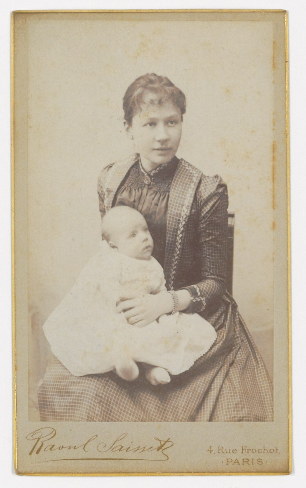
The archive was structurally asymmetrical: 820 letters by Vincent survive vs. 39 from Theo (first printed 1932, F04–F05, F85).
■ ~200 kept by family → Van Gogh Museum (F81). ■ ~190 paintings sold by Johanna (up to ~250 total works incl. drawings, F80). ■ Remainder: dispersed before/outside her inventory.
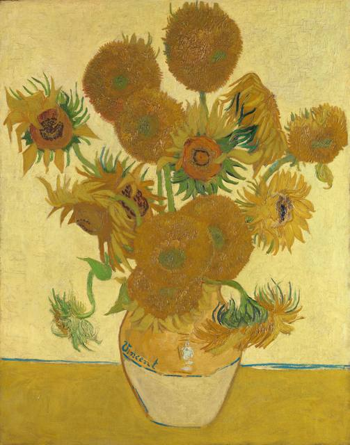
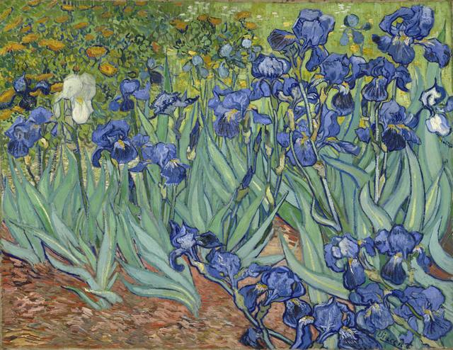
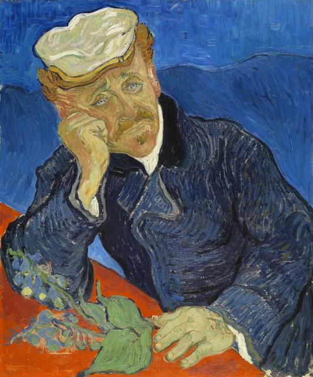
Chapter 7 · The Scoreboard
Run the whole cast back once: the fired dealership clerk, the unrenewed Borinage preacher, the man in love with a Japan he assembled out of prints, the ex-Communard paint dealer from the Brest hulks, the self-mythologising stockbroker, and the twice-widowed sister-in-law running a boarding house and an inventory sheet. The canon is not a gallery of well-adjusted men.
You don't want to be a disaster artist — you want the engine without the disaster, and ideally a sister-in-law with a ledger.
Sources & About These Numbers
About these numbers: Every count on this provisional page traces to proj/disaster-artist/figures.md (F01–F100). Where sources disagree, ranges are shown explicitly: ~860–900 paintings (Met essay vs. F/JH catalogue totals), ~13,000–19,000 F in modeled Theo stipends (pending The Account Book of Theo van Gogh and Jo van Gogh-Bonger, 2002), and ~190–250 paintings sold by Johanna. Single-source figures (e.g., 1907 Morozov 30,000 F resale; 1894 Drouot 10,000 F charity sale; 1901 Bernheim-Jeune 71-work count) are hedged. Older 1958 CL letter translations await direct recheck against the 2009 critical edition.
s0115V1962; CL 157, CL 500.1951.65; Norton Museum.Estimated decade total: ~16,000 F (range 13,000–19,000 F across 1880–1890).
Documented anchors: ~100 F/mo (1881–82, F20), 150 F/mo (Nuenen, F21), ~250 F/mo (Arles, F22). Cross-check: ~14.5% of Theo's 11,000–14,000 F/yr salary (F24).
Pending check against Stolwijk & Veenenbos, The Account Book (2002).